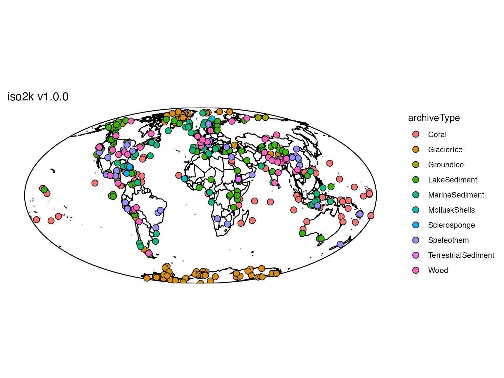
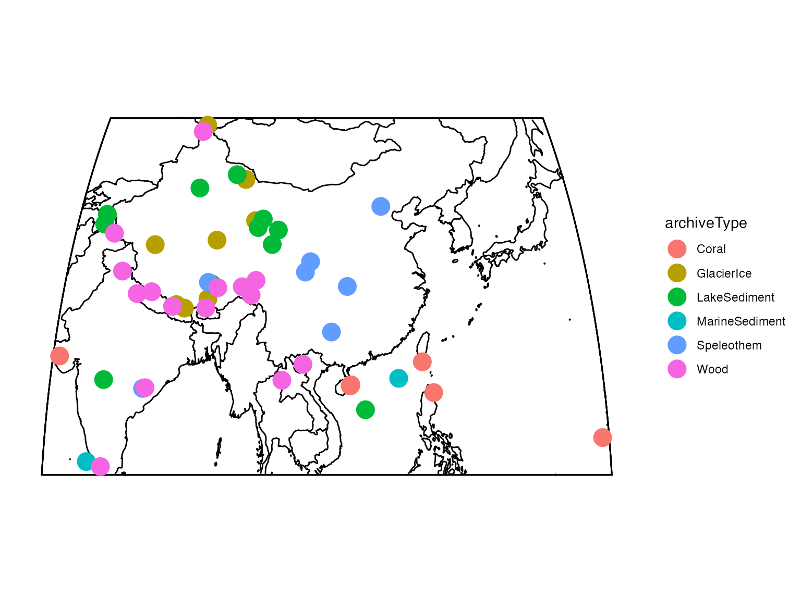
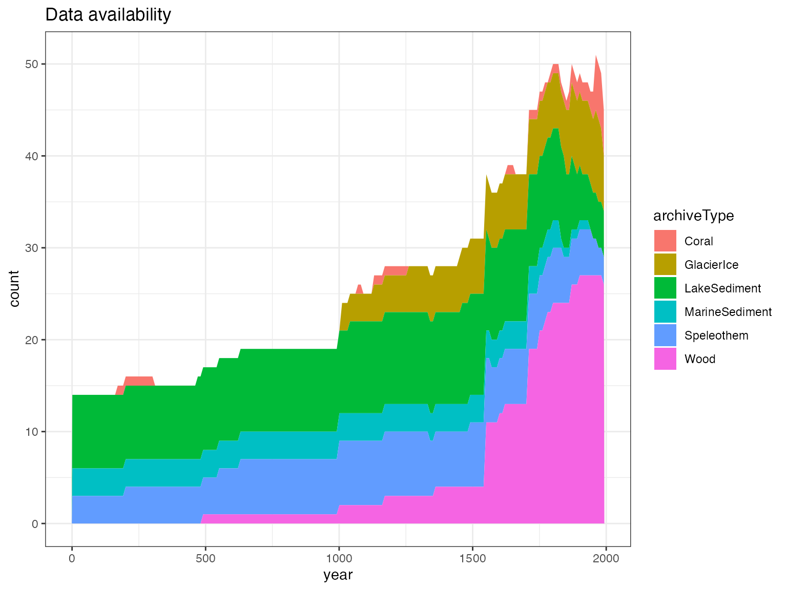
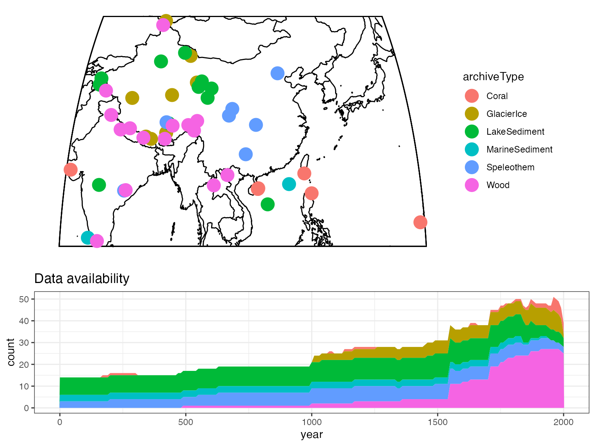

vignettes/TsFilteringAndMapping.Rmd
TsFilteringAndMapping.RmdFirst let’s load version 1.0.0 of the iso2k database. Check out the details of the iso2k dataset Earth System Science Data.
iso <- readLipd("http://lipdverse.org/iso2k/1_0_0/iso2k1_0_0.zip")That was easy - note that readLipd() can take individual LiPD files (ending in .lpd), or zip files full of LiPD files, directly from the web.
Now that the data are loaded, we can quickly map a bunch of LiPD
files using mapLipd().

Now we’ve seen an overview of all the files we’ve loaded, but now we’d like to filter the data.
First, we’ll extract a TS object, the primary way to work with multiple LiPD files. A TS is a list object that has an entry for each, column, and is readily queryable.
TS <- extractTs(iso)If you’re used to working in the tidyverse paradigm, check out this vignette, which shows an example of working with iso2k data in a tidy manner.
For this vignette, we’ll keep the data as a list and show some
examples this way. Now we’ll filter it based on a range of criteria. For
simple filtering, that include queries like >
< or ==, you can use
filterTs
iTS <- filterTs(TS, "paleoData_iso2kPrimaryTimeseries == TRUE")## [1] "606 results after query: paleoData_iso2kPrimaryTimeseries == TRUE"For more complex queries, however, you have a couple of options. it’s often more efficient to pull vectors of the metadata that you’d like to query and build and index
lat <- pullTsVariable(iTS,"geo_latitude")
lon <- pullTsVariable(iTS,"geo_longitude")
var.name <- pullTsVariable(iTS,"paleoData_variableName")
index <- which(between(lat,10,50) & between (lon,70,170) & var.name == "d18O")
gTS <- iTS[index]OK, now we’ve filtered down to what we’d like to map. We can use
mapTs() to map this.
mapTs(gTS)
You can change the mapping options by passing options to
basemap() which creates the base map. Try
?basemap for options.
##Time availability
You can also quickly make a plot of availability through time:
plotTimeAvailabilityTs(gTS,age.range = c(1,2000),age.var = "year")
Finally, if you just want a quick overview,
plotSummaryTs() will quickly combine these two plots, but
with fewer options
plotSummaryTs(gTS,age.var = "year", age.range = c(0,2000))
## TableGrob (5 x 3) "arrange": 2 grobs
## z cells name grob
## 1 1 (1-3,1-3) arrange gtable[layout]
## 2 2 (4-5,1-3) arrange gtable[layout]